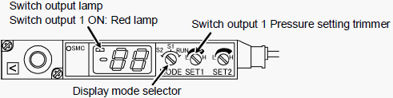

A1-4 How to adjust about vacuum sensor ( 4 )
Vacuum sensor(ZQ1S-D32CN-AS) adjustment for NS-7000 / NS-8000 on Input arm and Output arm
Basic Setting
1. Set the display MODE selector to “S1”. (Setting pressure of switch output 1 will be displayed.)
2. Turn the switch SET1 pressure setting trimmer and adjust until the displayed pressure becomes − 50 kpa.
3. Set the display MODE selector back in “RUN”. (Current pressure will be displayed.)
4. Turn ON the pickup vacuum and confirm that the switch output lamp, Switch output 1, is ON (red lamp) while holding a device.
* Switch output 2 is out of use and needs no setting.

Part code: R35N700010900 (Spec: ZQ1S-D32CN-AS)
* In case the above cannot help
When the handler supports small devices and the pickup nozzle diameter is extremely small (for example, φ 0.5 mm), the negative pressure can be higher than − 50 kpa even without a device. For example, when the negative pressure without a device is − 55 kpa, set the S1 value to − 60 kpa (higher than “− 55 kpa”).